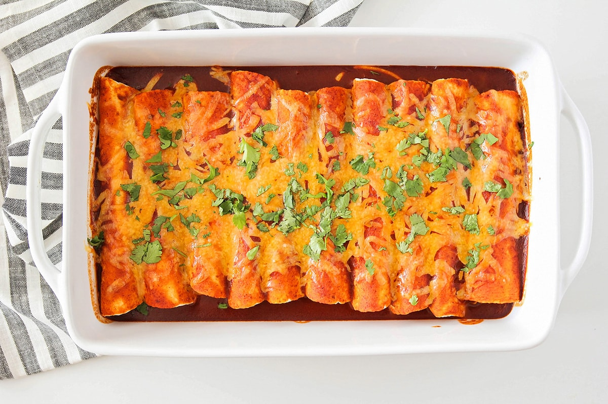

Enchiladas

Shredded beef enchiladas made with just six ingredients! This easy dinner idea is a crowd pleaser and is filled with corn, beef, green chilies, cheese and covered in red sauce.
Ingredients
- 3 cups shredded and cooked roast beef
- 1 4oz can diced green chilies
- 1 cup corn
- 1 20oz can red enchilada sauce
- 2 1/2 cups shredded cheese
- 12 small flour or corn torillas
Instructions
- Preheat the oven to 350.
- In a medium bowl, mix together the shredded beef, green chilies, corn, and ½ cup enchilada sauce. Spread ½ cup of enchilada sauce into the bottom of a 9 x 13 baking dish.
- Scoop about ⅓ cup of filling into the middle of each of the tortillas, and sprinkle with cheese (reserving about 1 cup of cheese for the top of the enchiladas). Roll each tortilla up and place seam side down in the prepared baking dish.
-
Pour the remaining enchilada sauce over the top of the rolled up tortillas, spreading to cover the tortillas completely. Sprinkle with the remaining shredded cheese.
- Bake 20-25 minutes, or until the cheese is melted and the sauce is bubbling. Serve hot.
Source